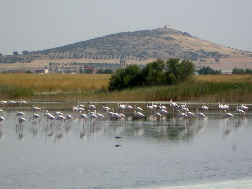
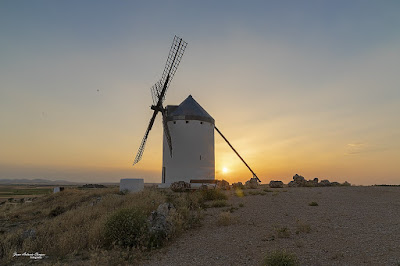
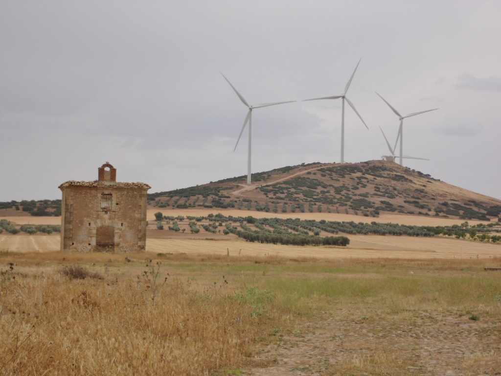
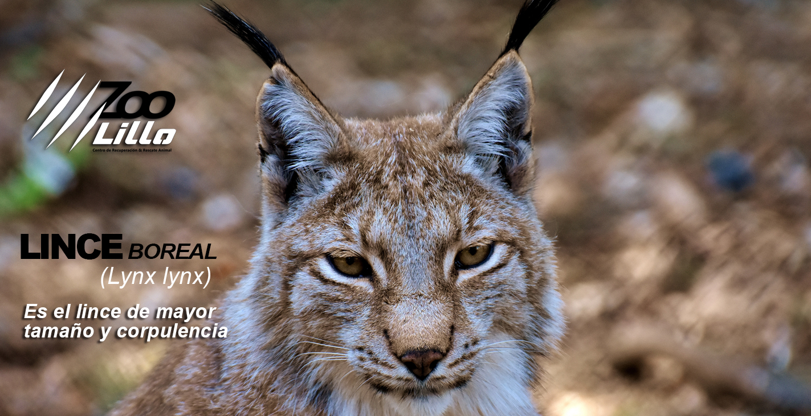
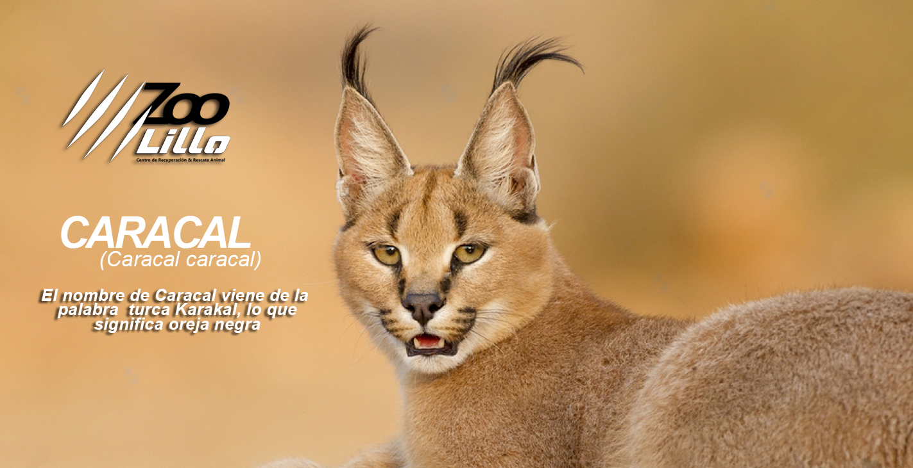
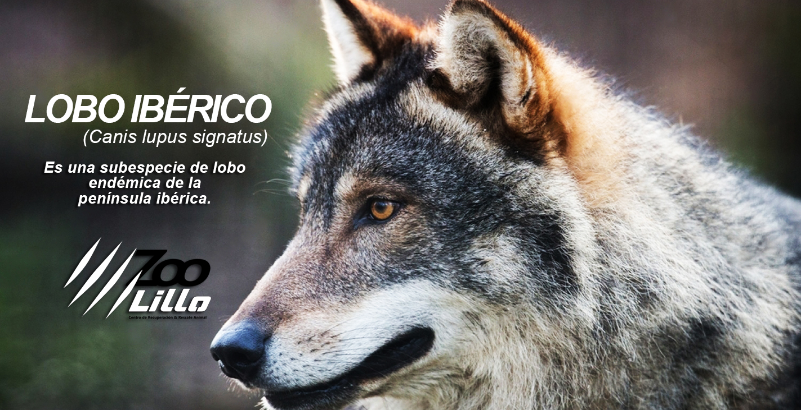
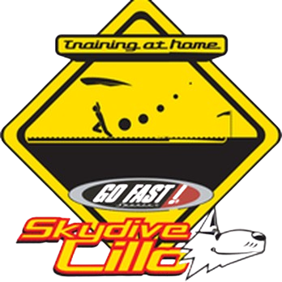

Historia y Naturaleza

Lagunas de Lillo
Reserva Natural declarada Zona de Especial Protección para las Aves (ZEPA), un humedal vital en La Mancha.
Ver ruta
El Molino de Viento
Totalmente restaurado y visitable, es el centinela de Lillo y ofrece vistas panorámicas del entorno.
Horarios
Iglesia Parroquial
Dedicada a Nuestra Virgen de la Esperanza, su impresionante torre preside la Plaza Mayor del pueblo.
Horarios
Ermita y Cerro San Antón
Un rincón de paz y tradición. La ermita es el punto de inicio de varias rutas de senderismo y ofrece un mirador inigualable hacia las lagunas y los campos.
Horarios RutasZoo Lillo: Centro de Recuperación Animal
El centro de Lillo no solo es un pueblo con historia, sino también un referente en la recuperación de fauna. Trabajamos por la conservación de especies autóctonas y en peligro.



Skydive Lillo

El centro de Lillo no solo es un pueblo con historia, sino también un referente en la recuperación de fauna. Trabajamos por la conservación de especies autóctonas y en peligro.